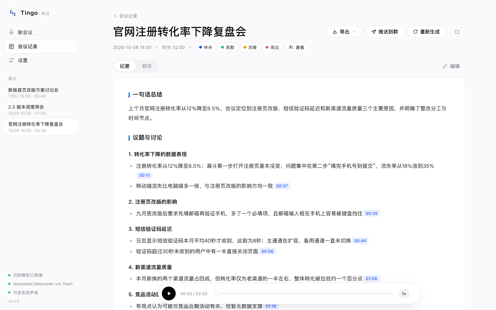

Every meeting, heard.
Record a meeting, transcribe it on your Mac, tell speakers apart — then let the LLM you choose write the minutes. Every conclusion carries a timestamp that plays back the original words.

Meeting notes you can trust
Audio stays on your Mac
Speech recognition and speaker separation run locally. Pair it with Ollama to work fully offline.
Records any call
Captures system audio and your mic at once — Zoom, Teams, Meet, Tencent Meeting, Feishu. No virtual audio driver.
Every claim has a source
Each line of the minutes links to the second it was said. Relative dates are resolved to real dates.
Fishbone that exposes hand-waving
When causes are discussed, Tingo draws a fishbone; branches with no supporting quote are flagged.
Never wait
Start the next meeting right away — transcription and minutes run in the background.
Export anywhere
PDF, Obsidian notes, Excalidraw, Markdown, Feishu / DingTalk / WeCom bots.
Fishbone diagrams bound to what was actually said
Each branch counts how much original speech backs it. Citations the model made up — timestamps that don't exist in the transcript — are marked in red.

More screenshots


How it compares
| Tingo | Otter / Granola / Fireflies | Feishu Minutes / Tongyi Tingwu | |
|---|---|---|---|
| Where audio lives | Only on your Mac | Cloud | Cloud |
| Chinese recognition | FunASR, built for Chinese | Mostly English | Good |
| Which LLM | Your choice, can be fully local | Fixed by vendor | Fixed by vendor |
| Trace claims to quotes | Timestamps everywhere, verified fishbone | Partly | Partly |
| Price | Free & open source | Subscription | Per-minute or membership |
FAQ
How do I record and transcribe a Zoom or Teams call on Mac?
Click record in Tingo. It captures system audio (the other side) and your microphone at the same time, with no BlackHole or virtual audio device. You can also drop in recordings exported by the meeting app.
Is my audio uploaded?
No. Transcription and speaker separation run on your Mac. Only the transcript text goes to the LLM you configure — use local Ollama and nothing leaves your machine.
Which LLMs are supported?
Any OpenAI-compatible API (OpenAI, Gemini, DeepSeek, Qwen, Ollama…) and the Anthropic (Claude) API.
Does it work for English meetings?
Yes. Switch the speech model to SenseVoice and set the app and minutes to English in Settings.
Is it free?
Yes, Tingo is free and open source (MIT). Cloud LLMs bill you for their API usage; local Ollama costs nothing.